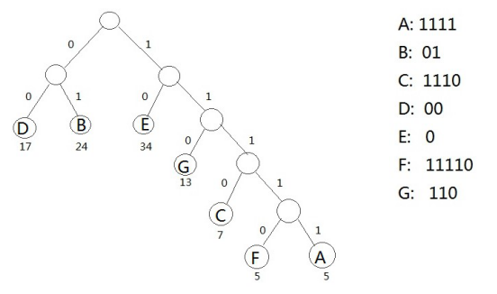

含n个结点的完全二叉树的深度为：d=log2n+1
查找成功时的比较次数至多为：log2n+1
查找成功时比较次数，为该节点在判定树上的层次数，不超过树的深度:d=log2n+1
Typedef struct
{
keyType Key;:
Info type otherinfo;
}TElemType;
平衡二叉树创建方法：
（1）插入新结点的时候，按照二叉排序树来进行处理；
（2）若插入的结点破坏了平衡二叉树的特性，就需要对平衡二叉树进行调整。
平衡二叉树调整方法：找到离插入结点最近且平衡因子绝对值超过1的祖先结点，以该节点为艮的子树为最小补平衡树，可将重新平衡的范围局限于这棵子树。
（1）需要经过系列的比较来确定关键字key的记录在表中的“地址”；
（2）若平均查找长度都不为0；
（3）不同查找方法仅在关键字和给定值进行比较的顺序不同。
树的带权路径长度（WPL）：根到每个叶结点的路径长度和该叶结点权值的乘积。 一颗有n个叶结点的二叉树，每个叶子节点带有权值Wi，从根节点到每个叶结点的路径长度为Li，则树的带权路径长度WPL为：WPL=w1l1+w2l2+···+wili
哈夫曼树就是使WPL值最小的二叉树。
核心思想：每次把根节点权值最小的两颗二叉树合并。
（1）将权值从小到大排序；
（2）将权值最小的两个结点合并，新结点权值为所合并的两个结点权值之和，得到一棵新二叉树；
（3）重复步骤（1）、（2），直到只剩下一棵二叉树；
因此，就得到一颗哈夫曼树，如下图所示。
（1）哈夫曼树并不唯一；
（2）哈夫曼树的子树也是哈夫曼树；
（3）哈夫曼树中无度为1的结点；
有n个叶子结点的哈夫曼树，其总结点树为2n-1；
在电文传输中，需要将电文中出现的每个字符进行二进制编码。在设计编码时需要遵守两个原则：
（1）发送方传输的二进制编码，到接收方解码后必须具有唯一性，即解码结果与发送方发送的电文完全一样；
（2）发送的二进制编码尽可能地短。下面我们介绍两种编码的方式。
①等长编码
这种编码方式的特点是每个字符的编码长度相同（编码长度就是每个编码所含的二进制位数）。假设字符集只含有4个字符A，B，C，D，用二进制两位表示的编码分别为00，01，10，11。若现在有一段电文为：ABACCDA，则应发送二进制序列：00010010101100，总长度为14位。当接收方接收到这段电文后，将按两位一段进行译码。这种编码的特点是译码简单且具有唯一性，但编码长度并不是最短的。
②不等长编码
在传送电文时，为了使其二进制位数尽可能地少，可以将每个字符的编码设计为不等长的，使用频度较高的字符分配一个相对比较短的编码，使用频度较低的字符分配一个比较长的编码。例如，可以为A，B，C，D四个字符分别分配0，00，1，01，并可将上述电文用二进制序列：000011010发送，其长度只有9个二进制位，但随之带来了一个问题，接收方接到这段电文后无法进行译码，因为无法断定前面4个0是4个A，1个B、2个A，还是2个B，即译码不唯一，因此这种编码方法不可使用。
因此，为了设计长短不等的编码，以便减少电文的总长，还必须考虑编码的唯一性，即在建立不等长编码时必须使任何一个字符的编码都不是另一个字符的前缀，这种编码称为前缀编码（prefix code）：
（1）利用字符集中每个字符的使用频率作为权值构造一个哈夫曼树；
（2）从根结点开始，为到每个叶子结点路径上的左分支赋予0，右分支赋予1，并从根到叶子方向形成该叶子结点的编码。
假设一个文本文件TFile中只包含7个字符{A，B，C，D，E，F，G}，这7个字符在文本中出现的次数为{5，24，7，17，34，5，13}，利用哈夫曼树可以为文件TFile构造出符合前缀编码要求的不等长编码，具体做法如下：
（1）将TFile中7个字符都作为叶子结点，每个字符出现次数作为该叶子结点的权值；
（2）规定哈夫曼树中所有左分支表示字符0，所有右分支表示字符1,将依次从根结点到每个叶子结点所经过的分支的二进制位的序列作为该结点对应的字符编码；
（3）由于从根结点到任何一个叶子结点都不可能经过其他叶子，这种编码一定是前缀编码，哈夫曼树的带权路径长度正好是文件TFile编码的总长度
通过哈夫曼树来构造的编码称为哈弗曼编码（huffman code），如下图所示。
